Gestion du dossier patient
Création d'un patient
Un patient peut être créé à tout moment depuis l’interface, indépendamment de l’agenda (cf. Agenda)
Deux modes de création sont possibles :
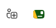
Lecture de carte vitale
En cliquant sur l’icône dédiée, les informations administratives du patient sont récupérées automatiquement via la carte Vitale et permettent une création rapide et sécurisée du dossier.
Création manuelle
En cliquant sur le bouton “+”, une fiche de création de patient s’ouvre et permet de saisir manuellement les informations nécessaires.
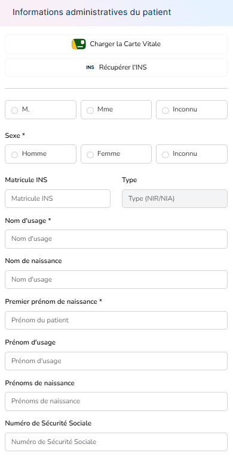
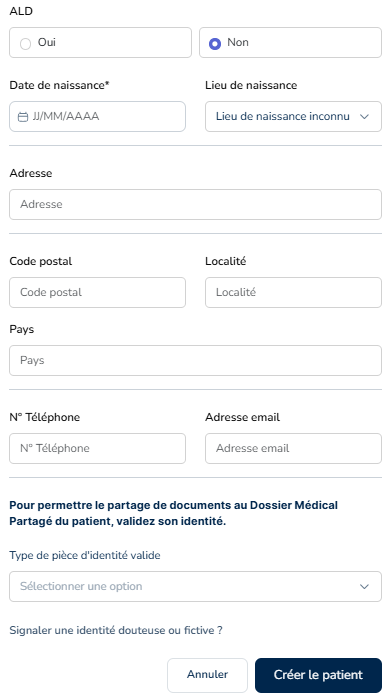
Lors de la création ou de la modification d’un patient, les informations administratives comprennent :
- l’identité (nom de naissance, nom d’usage, prénoms),
- le genre,
- la date et le lieu de naissance,
- le numéro de Sécurité sociale, l’INS
- Le statut ALD
- les coordonnées (adresse, téléphone, email),
Vue générale d'un dossier patient
L'entête
L’entête comporte le nom prénom, âge et date de naissance, INS et numéro de SS du patient. Elle propose également un menu contextuel qui permet d’importer ou de mettre à jour l’INS, de consulter le Dossier Médical Partagé (DMP) puis de modifier ou supprimer le patient.
Le menu latéral : informations patient
La colonne latérale gauche synthétise et structure les informations clés du patient :
- Biométrie
- Pathologies en cours
- Données physiques
- Profession, avec indication su accident du travail ou maladie professionnelle
- Antécédents médicaux, chirurgicaux et familiaux
- Présence d’allergies
- Traitements de fond et/ou ponctuels, avec le suivi des traitements. Cette vue permet de contribuer à la continuité des soins et à sécuriser le parcours thérapeutique.
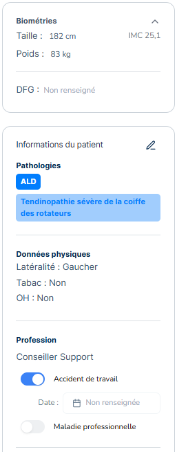
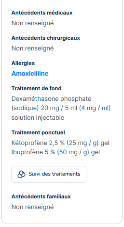
Elles sont modifiables à tout moment via le bouton de modification à côté des “Informations du patient”
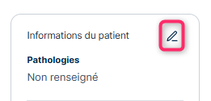
Un encart supplémentaire permet d’associer un ou plusieurs médecins, soit par recherche ou par création. Cette information facilite la coordination des soins et la communication interprofessionnelle.
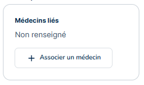
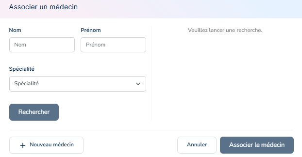
Traitements et prescriptions
Suivi des traitements
Cette partie du menu latéral est dédiée au suivi thérapeutique du patient et surtout à la gestion des prescriptions associées. Cette vue contribue à la continuité des soins et à la sécurisation du parcours thérapeutique.
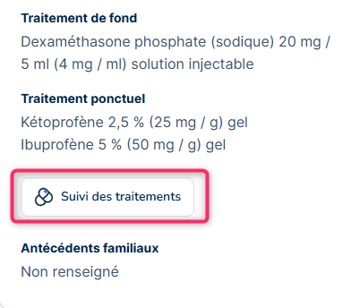
Le suivi des traitements permet de visualiser :
- les traitements de fond,
- les traitements ponctuels,
- leur statut (actif ou arrêté), une simple coche permet d’organiser sa visualisation
- la posologie indiquée,
- la date de début et, le cas échéant, de fin,
- le prescripteur
- si ALD ou non
- le code ATC et le code INN
- le motif
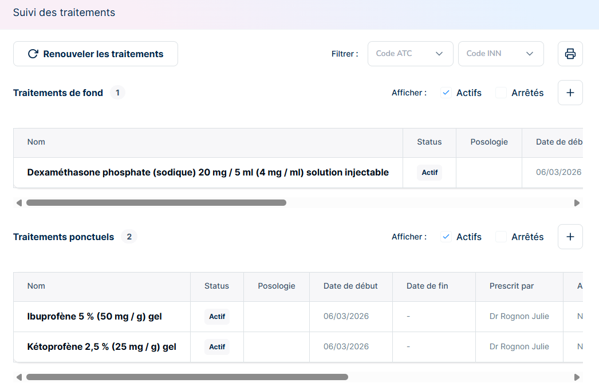
Un menu Actions sur la droite permet de modifier chacun des éléments évoqués ci-dessus, de passer le traitement en “arrêté” puis de le “reprendre” si besoin, mais aussi de supprimer la ligne complète. En cas de suppression, un message indique que cette ligne de traitement n’apparaitra plus dans le tableau de suivi, il est alors préférable de le laisser en “arrêté”.
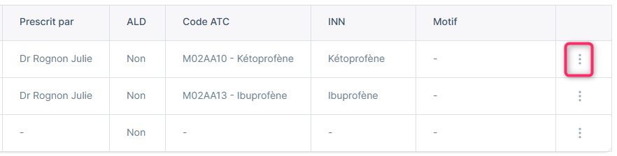
- l’identité (nom de naissance, nom d’usage, prénoms),
- le genre,
- la date et le lieu de naissance,
- le numéro de Sécurité sociale, l’INS
- Le statut ALD
- les coordonnées (adresse, téléphone, email),
Renouvellement et ordonnances associées
Depuis le suivi des traitements, il est possible de renouveler un traitement existant et de préparer les prescriptions associées, tout en assurant la cohérence entre les traitements en cours et les ordonnances à générer.
Les ordonnances de médicaments s’intègrent alors dans le parcours documentaire du patient.

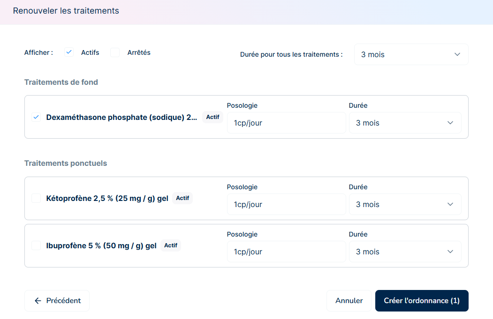